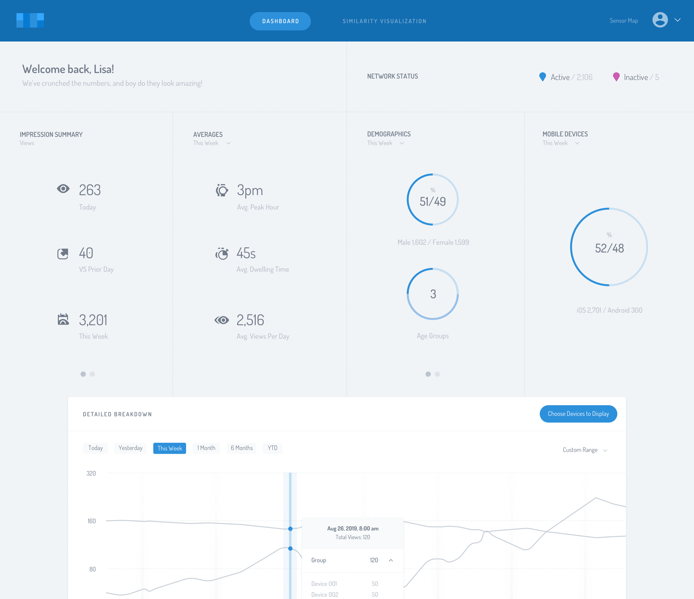
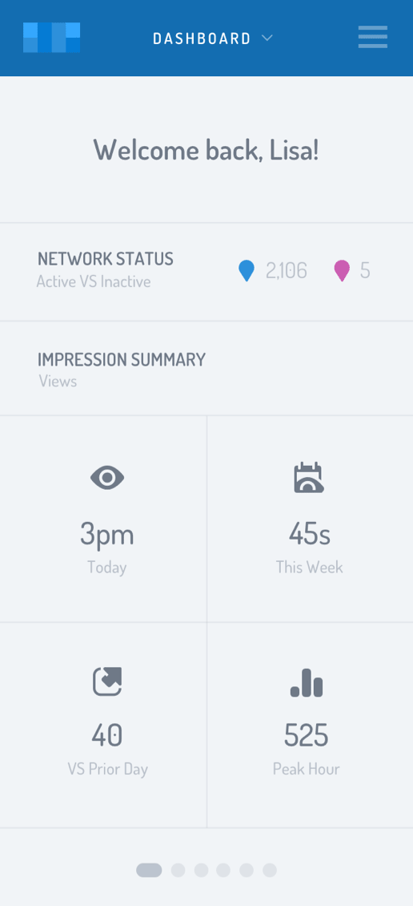
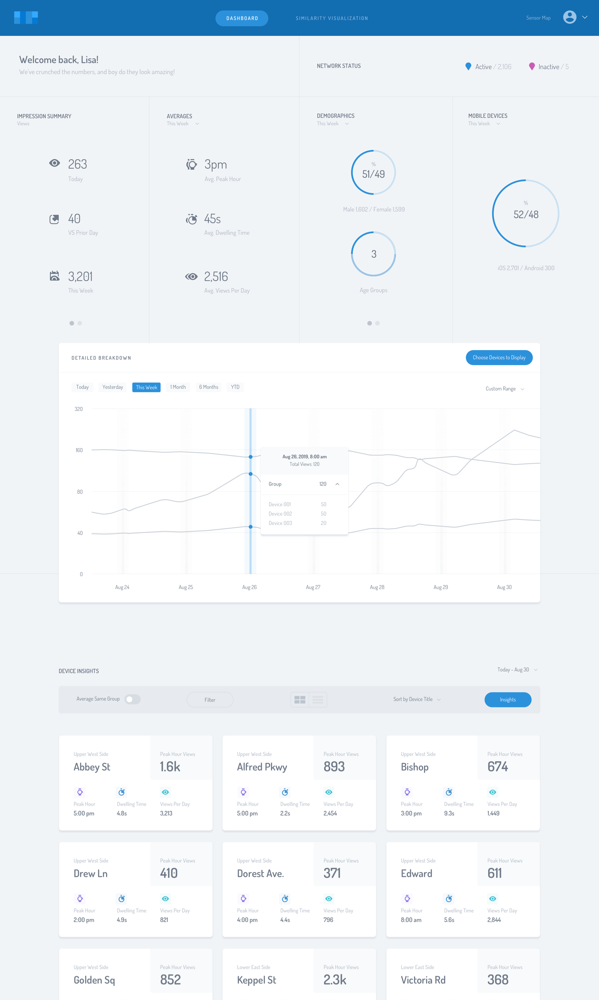
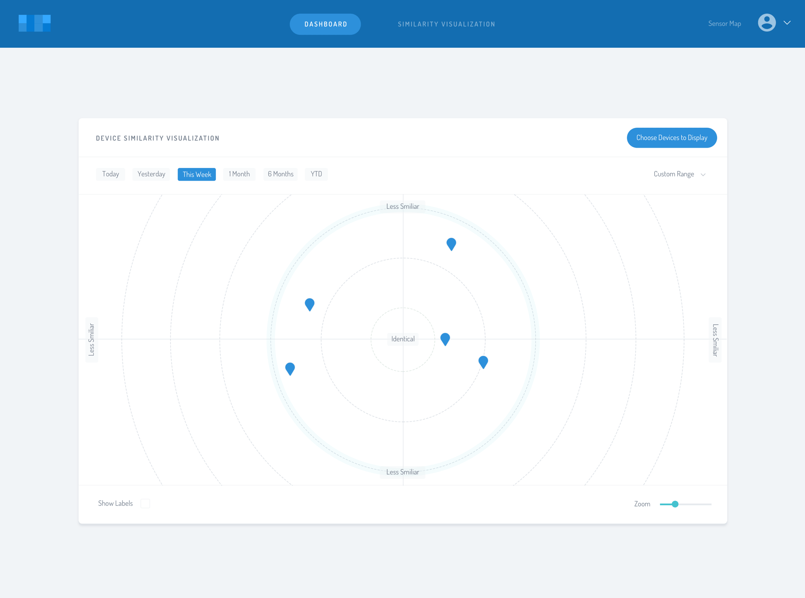
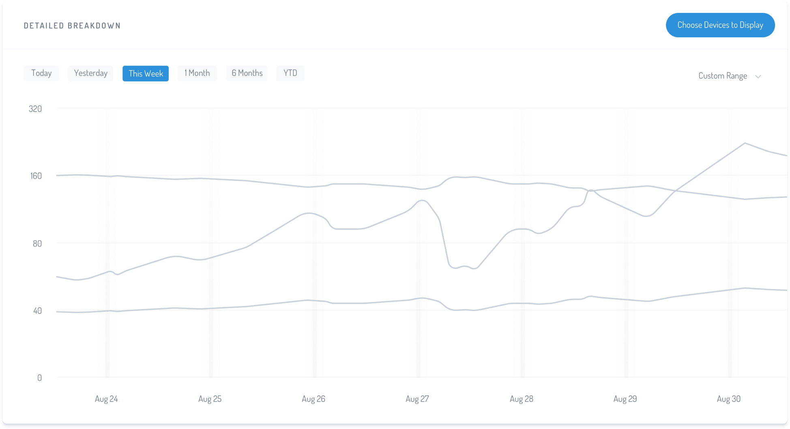
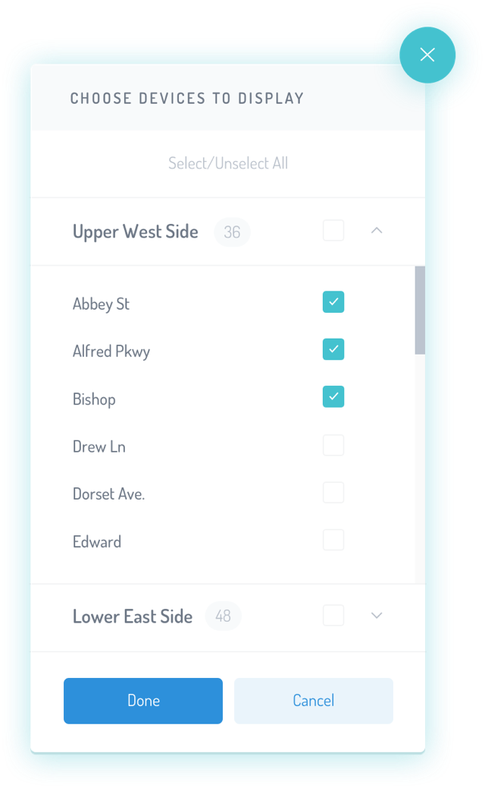
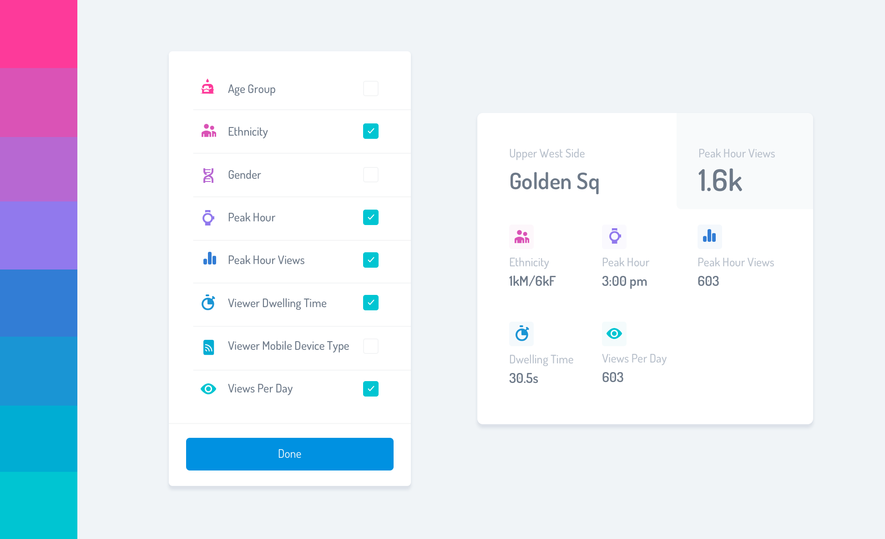
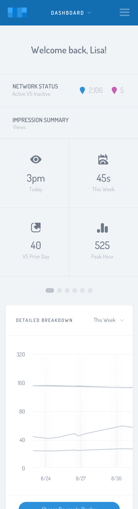
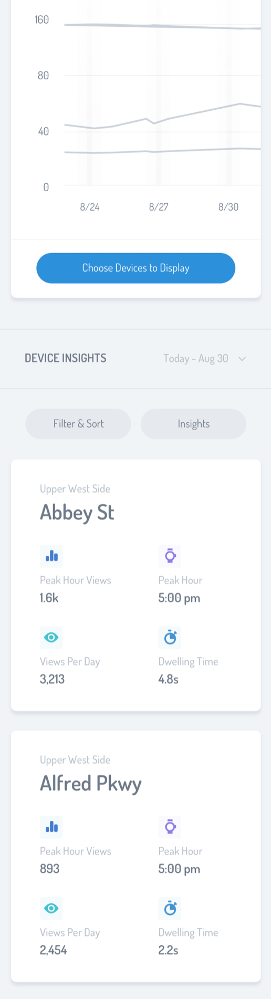
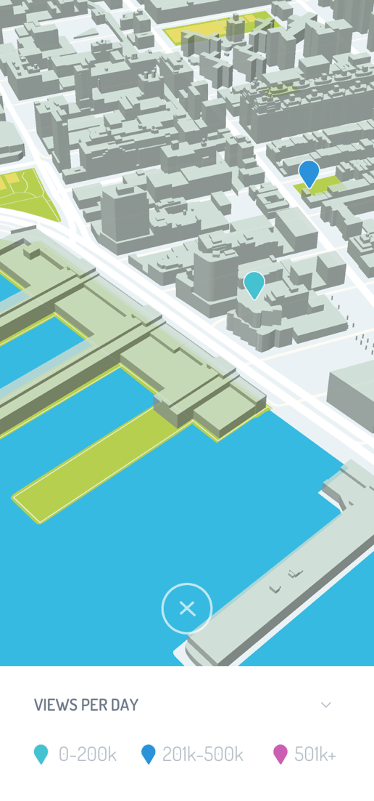

A Platform that Empowers Out-Of-Home Advertisers with Data, Like Never Before
Factly is a SaaS platform that enables businesses with physical signage to confidently measure and predict an array of audience metrics. Factly is turning the out-of-home advertising market on its ear with a technology-first platform that
truly turns heads. See for yourself.


A two-pronged approach
Factly is a two-progned system that consists of physical sensors that are deployed on-site, and a dashboard. The sensors capture and assess audience data such as gender, age, view time, etc. The data is then anonimized and relayed back
to a dashboard. Once there, customers are able to clearly see who, and how, viewers have engaged with their message.
Establishments with physical signage
Factly is a B2B focused company that works with businesses who want to accurately understand who views their signage—this includes anything from billboards, to wayfinding signage, and environmental graphics.
The Factly customer
is looking for deeper audience metrics than have historically been available through legacy methods.
Listening was the first step
Factly approached me with some semblance of an interface. There was a working prototype to use as a jumping-off point, but it was far from feature rich, or visually appealing. However, it proved helpful in understanding the complexity
and scope of the project. I assessed the interface, implemented UX solutions from the ground up (calling on best practices as necessary,) and finished it off with a wall-to-wall user interface that cleanly met the challenge.
Dashboard
The dashboard is a customers high-level overview of all of the data the system has reported back. Each section of the interface is tailored toward a specific task, giving the user fast access to the data that’s most important to them at that particular
moment.

Clean, data-focused product design
When approaching the design I wanted to make sure that legibility led the endeavor. A light blue background with darker blue text helped keep the design easy on the eyes. I used pops of vibrant blue to call attention to important areas
of the interface like the primary navigation and various calls to action.


Tending to the fundamentals
I deployed some serious design chops in order to polish the device selection modal and tooltip into interactions that are easy to make sense of.
The overall structure and use of color help guide the viewer, calling their attention
to the areas that need a users input first, such as choosing which device to display.
Subsequent to that, I used cyan which clues the user in to other options that call for attention, like the device checkboxes. Vibrant blue
is used again to ensure the user clicks Done to save their work.

Device insights color scale
While the overall interface uses a more muted color palette, the data that comprises the cards was one area of the interface that was well-served with a more liberal use of color. I created a harmonious color scale to separate the lengthy
number of metrics a user can elect to show on a content card.
To warrant that the use of color stayed analogous, I limited them to a scale of cooler purples and blues. This is where my understanding of color theory really helped
deliver a favorable result.

Making the sensor map high-gloss
When designing the Factly dashboard I knew their developers would have to place a significant amount of time in simply ensuring that the data was being imported and displaying properly, and that the HTML/CSS/JS execution matched the design
I was working toward. And since the sensor map is also integral to the Factly experience, I wanted to incorporate a way to ease the development effort required to bring the design to completion.
I decided I’d recommend a custom
integration of a 3rd party software called Mapbox. Mapbox provides an easy to use configurator where I customized a set of colors, fonts, and other properties to coincide with the overall brand look and feel I had set in place. Via
API/code snippet, Factly is able to use Mapbox to achieve a level of finish users expect with enterprise-grade software, while minimizing the number of hours and effort to bring my design to fruition.
The map itself uses 3D
buildings, pitch, and perspective to create a more immersive and enjoyable experience.
Watch a :30 second clip of me editing the sensor map
Bespoken mobile design
With execution of the mobile design of the platform in mind throughout the entire product design process, I seamlessly laid out the interface for devices with smaller screens. More detailed interactions such as the chart make use of a
horizontal swipe gesture while more lengthy areas, such as content cards, respond well to the verticality of a mobile screen.

Hindsight
Factly, whose name has been changed so as not to affect SEO ranking as they roll out their platform, is rapidly evolving. It’s my hope to continue helping them solve complex product design challenges that revolve around big data and continually
set the experiential/visual bar higher and higher.
Noteworthy insight
It was quite the undertaking to condense the data into palatable chunks, especially the portion at the top of the dashboard that provides a snapshot of high-level metrics. The client needed the ability to display vast and different types
of data there while maintaining visual clarity. I achieved it by relying heavily on design principles… ample white space, and limited use of fonts to name a few. And on the technical side, content stacking helped create the versatility
needed to display all of the data required.